Азбука схем
Язык - это средство общения. У радиолюбителей существует свой язык, который помогает зачастую понять друг друга людям, в жизни разговаривающим на разных языках. Этот язык - схемы! Существует много видов схем, но радиолюбителю в основном приходится сталкиваться с четырьмя:
- структурная схема;
- функциональная схема;
- принципиальная схема;
- схема соединений (монтажная).
Структурная схема (ее раньше называли еще и блок-схемой) определяет основные функциональные части изделия, их назначение и взаимосвязь. Отдельные узлы или части устройства обозначаются прямоугольниками, а связи между ними показываются линиями, стрелки на которых указывают направление прохождения сигналов.
Зачем нужна такая схема? Если радиолюбительская конструкция содержит 4...5 транзисторов и полтора десятка резисторов и конденсаторов, можно обойтись и без нее. Но вот рождается радиокомплекс, мультиметр или радиотелефон. Эти устройства состоят из достаточно сложных узлов. Чтобы деревья не загораживали леса на первом этапе разработки и не приходилось отвлекаться на мелочи (например сколько и каких резисторов, конденсаторов и транзисторов поставить), обдумывать идею, (да и рассказывать пронее) лучше на уровне прямоугольников. В таком виде проще представить взаимодействие между фунциональными узлами: величину и форму сигналов, очередность их поступления и т.п. И лишь затем, состыковав отдельные узлы между собой и увязав сигналы, можно рисовать принципиальные схемы.
Функциональная схема помогает понять процессы, происходящие в отдельных узлах (блоках) устройства. Она является переходной от структурной к принципиальной. На ней подробно изображаются те части, которые необходимы для понимания описываемых процессов, а второстепенные элементы или узлы изображаются в виде прямоугольников. К примеру, цепи питания и т.п. на такой схеме можно не детализировать.
Для обозначения прямоугольников на структурных и функциональных схемах можно использовать русские и латинские (латинские предпочтительнее) буквы и цифры. Существуют и специальные обозначения функциональных узлов, основные из которых показаны в таблице 1.
Таблица 1
| Обозначение | Наименование | Обозначение | Наименование |
|---|---|---|---|
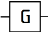 |
Генератор (общее обозначение) | 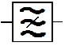 |
Режекторный фильтр |
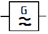 |
Генератор звуковых частот | 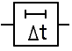 |
Линия задержки |
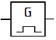 |
Генератор импульсов | 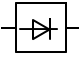 |
Амплитудный детектор |
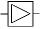 |
Усилитель | 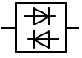 |
Частотный детектор |
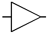 |
Усилитель | 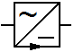 |
Выпрямитель |
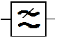 |
Фильтр нижних частот | 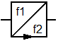 |
Преобразователь частоты f1 в f2 |
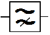 |
Фильтр верхних частот | 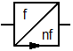 |
Умножитель частоты |
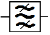 |
Полосовой фильтр | 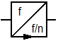 |
Делитель частоты |
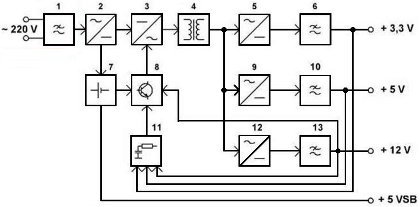
Рис. 1 - Пример функциональной схемы (блока питания ПК)
Схема соединений (монтажная) - это схема, которая показывает внешние и внутренние соединения между конструктивно законченными узлами изделия. Изображения элементов даются в виде прямоугольников, УГО или внешних очертаний. На монтажной схеме воспроизводятся в точном соответствии с реальным расположением все провода, кабели и жгуты, указывается марка и сечение проводов. Это очень важно для высоковольтной или сильноточной аппаратуры, так как изоляцию обычного монтажного провода может пробить высокое напряжение, причем не сразу, а через какое-то время при повышении температуры, влажности и т.п.
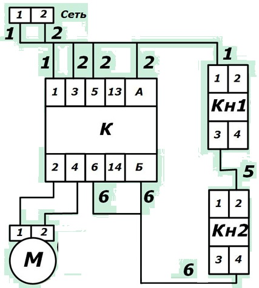
Рис. 2 - Пример монтажной схемы (подключения электродвигателя)
На схеме соединений изображаются также элементы монтажа (опорные стойки, переходные и расшивочные колодки), которые обеспечивают его жесткость и удобство распайки. Монтажная схема обычно создается тогда, когда предполагается изготовить несколько однотипных устройств. В этом случае она значительно упрощает сборку и монтаж. В случае одного экземпляра устройства монтажка тоже полезна, если через какое-то время приходится его ремонтировать, а сразу вспомнить что где идет бывает очень трудно.
Принципиальная схема дает полное представление об электрическом устройстве данного прибора. На принципиальной схеме в виде условных графических обозначений (УГО) показываются все электрические элементы, входящие в состав прибора, указываются их позиционные обозначения, номиналы и связи между ними (рис. 3).
Принципиальная схема является основным видом схемы, используемой в радиотехнике. Хотя она не дает наглядного представления о действительном виде конструкции, однако позволяет детально разобраться в принципах ее работы.
Чтобы научиться читать схемы, первым делом, нужно изучить как выглядит тот или иной радиоэлемент в схеме. До сих пор весь мир не может договориться, как обозначать тот или иной радиоэлемент либо устройство. В данной статье будем рассматривать обозначения радиоэлементов по ГОСТ .
Рассмотрим простенькую электрическую схему блока питания (рис. 3).
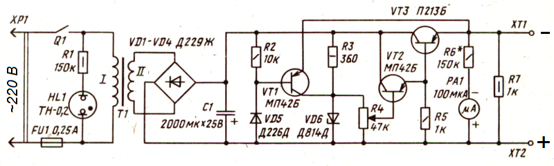
Рис. 3 - Схема электрическая принципиальная
В основном, все схемы читаются слева-направо. Всякую разную схему можно представить в виде отдельного блока, на который мы что-то подаем и с которого мы что-то снимаем. Здесь у нас схема блока питания, на который мы подаем 220 В из розетки вашего дома, а выходит уже с нашего блока постоянное напряжение. То есть вы должны понимать, какую основную функцию выполняет ваша схема. Это можно прочесть в описании к ней.
Прямые линии (рис. 4) — это проводочки, по которым будет бежать электрический ток. Их задача — соединять радиоэлементы.
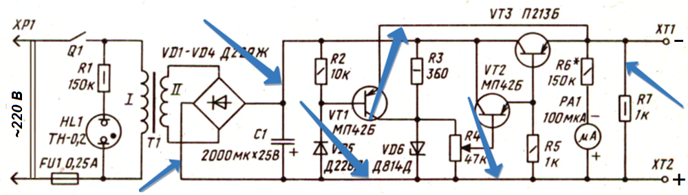
Рис. 4 - Провода на схеме электрической принципиальной
Точка, где соединяются три и более проводочков, называется узлом (рис. 5). Можно сказать, в этом месте проводочки спаиваются.
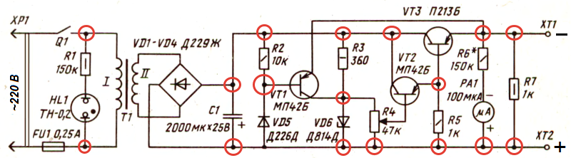
Рис. 5 - Узлы на схеме электрической принципиальной
Если пристально вглядеться в схему, то можно заметить пересечение двух проводочков (рис. 6).
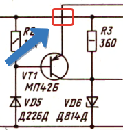
Рис. 6 - Пересечение двух проводов на схеме электрической принципиальной
В этом месте проводочки не соединяются и они должны быть изолированы друг от друга.
В современных схемах чаще всего можно увидеть вот такой вариант, который уже визуально показывает, что соединения между ними отсутствует.
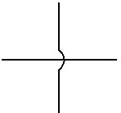
Рис. 7 - Альтернативное изображение пересечения двух проводов на схеме электрической принципиальной
Здесь как бы один проводок сверху огибает другой, и они никак не контактируют между собой. Если бы между ними было соединение, то мы бы увидели узел (рис. 5).
На схеме можно заметить, что резистор R6* отмечен звёздочкой *. Это означает, что номинальное сопротивление этого резистора нужно подобрать с целью установки тока полного отклонения микроамперметра. Обычно в таких случаях вместо резисторов, номинал которых нужно подобрать, временно ставится переменный резистор с сопротивлением несколько больше, чем номинал резистора, указанного на схеме.
Для определения оптимальной работы транзистора в схеме усилителя (рис. 8) в разрыв цепи коллектора подключается миллиамперметр.
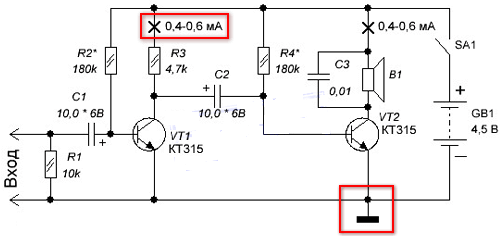
Рис. 8 - Разрыв на схеме электрической принципиальной
Место на схеме, куда необходимо подключить амперметр показано на рисунке 9.
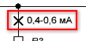
Рис. 9 - Место включения амперметра на схеме электрической принципиальной
Тут же указан ток, который соответствует оптимальной работе транзистора. Напомним, что для замера тока, амперметр включается в разрыв цепи.
Далее включают схему усилителя выключателем SA1 и начинают переменным резистором менять сопротивление R2*. При этом отслеживают показания амперметра и добиваются того, чтобы миллиамперметр показывал ток 0,4 - 0,6 миллиампер (мА). На этом настройка режима транзистора VT1 считается завершённой. Вместо переменного резистора R2*, который мы устанавливали в схему на время наладки, ставится резистор с таким номинальным сопротивлением, которое равно сопротивлению переменного резистора, полученного в результате наладки.
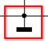
Рис. 10 - Обозначение корпусного, общего провода на схеме
На рисунке 10 показано обозначение общего провода. В технической документации он называется корпусом. Как видим, общим проводом в показанной схеме усилителя является провод, который подключен к минусовому "-" выводу батареи питания GB1. Для других схем общим проводом может быть и тот провод, который подключен к плюсу источника питания. В схемах с двуполярным питанием, общий провод указывается обособленно и не подключен ни к плюсовому, ни к минусовому выводу источника питания.
Относительно общего провода проводятся все измерения в схеме, за исключением тех, которые оговариваются отдельно, а также относительно его подключаются периферийные устройства. По общему проводу течёт общий ток, потребляемый всеми элементами схемы.
Общий провод схемы в реальности часто соединяют с металлическим корпусом электронного прибора или металлическим шасси, на котором крепятся печатные платы.
Стоит понимать, что общий провод это не то же самое, что и "земля" (рис. 11) . "Земля" - это заземление, то есть искусственное соединение с землёй посредством заземляющего устройства.
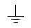
Рис. 11 - Условное обозначение заземления на схеме
В отдельных случаях общий провод устройства подключают к заземлению.
Схема состоит из различных значков. Возьмем значок R2 (рис. 12).
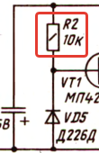
Рис. 12 - Позиционное обозначение резистора на схеме
Надпись R означает резистор. Так как у нас он не единственный в схеме, то разработчик этой схемы дал ему порядковый номер «2». В схеме их 7 штук. Радиоэлементы в основном нумеруются слева-направо и сверху-вниз. Прямоугольник с чертой внутри показывает, что это постоянный резистор с мощностью рассеивания в 0,25 Вт. Также рядом с ним написано 10к, что означает его номинал в 10 килоОм.
Позиционные обозначения элементов состоят из двух частей. В первой части обозначения указывается группа и вид элемента или устройства. Эта часть содержит одну или две буквы латинского алфавита - так называемый буквенный код. Для обозначения радиоэлементов используются однобуквенные и многобуквенные коды. Однобуквенные коды — это группа, к которой принадлежит тот или иной элемент. Для уточнения элемента после однобуквенного кода идет вторая буква, которая уже обозначает вид элемента.
Во второй части позиционного обозначения указывается порядковый номер элемента в пределах данного вида в устройстве. Радиоэлементы в основном нумеруются слева-направо и сверху-вниз. Условный номер части элемента, например частей многоконтактного переключателя, если они изображены в разных местах схемы, содержит еще одну цифру, разделенную точкой, т.е. первая секция переключателя SA1 - SA1.1; вторая секция переключателя - SA 1.2 и т.д.; элемент 1 (функционально законченный узел) цифровой микросхемы DD2 - DD2.1.
Таблица 2
| Элементы и устройства | Букв.код |
|---|---|
| Устройства - общее обозначение, функциональный блок (например, усилители) | A |
| Преобразователи неэлектрических величин в электрические и обратно (кроме генераторов и источников питания - микрофоны, динамические головки, звукосниматели) |
B |
| Конденсаторы постоянной и переменной емкости | C |
| Схемы интегральные и различные модули (цифровые микросхемы, операционные усилители ) |
D |
| Разные элементы, которые не попадают ни в одну группу | E |
| Элементы и устройства защиты (предохранители, разрядники, автоматы отключения сети) | F |
| Генераторы, источники питания, кварцевые генераторы, гальванические элементы, аккумуляторы | G |
| Устройства индикаторные и сигнальные (сигнальные лампы, полупроводниковые индикаторы, звонки) |
H |
| Реле электромагнитные, пускатели | K |
| Катушки индуктивности, дроссели | L |
| Электродвигатели постоянного и переменного тока | M |
| Приборы и устройства измерительные | P |
| Выключатели и разъединители в силовых цепях (где большое напряжение и большая сила тока) | Q |
| Резисторы постоянные, переменные, подстроечные | R |
| Устройства коммутационные (переключатели, выключатели, кнопки) | S |
| Трансформаторы, автотрансформаторы | T |
| Преобразователи электрических величин в электрические, устройства связи | U |
| Приборы полупроводниковые и электровакуумные (диоды, транзисторы, электронные лампы) | V |
Линии и элементы сверхвысокой частоты, антенны |
W |
| Устройства соединительные (гнезда, зажимы, разъемы) | X |
| Устройства механические с электрическим приводом (электромагниты) | Y |
| Устройства оконечные, фильтры, ограничители | Z |
Таблица 3
| Букв.код | Элементы и устройства |
|---|---|
| ВА | Громкоговоритель (головка динамическая) |
| BB | Магнитострикционный элемент |
| BD | Детектор ионизирующих излучений |
| BE | Сельсин-приемник |
| BC | Сельсин датчик |
| BF | Телефон (капсюль) |
| BK | Тепловой датчик |
| BL | Фотоэлемент |
| BM | Микрофон |
| ВР | Датчик давления |
| BR | Датчик частоты вращения (тахогенератор) |
| BS | Звукосниматель |
| BQ | Пьезоэлемент |
| BV | Датчик скорости |
| DA | Интегральная микросхема аналоговая |
| DD | Интегральная микросхема цифровая, логический элемент |
| DT | Устройство задержки |
| DS | Устройство хранения информации |
| EL | Лампа осветительная |
| ЕК | Нагревательный элемент |
| FA | Элемент защиты по току мгновенного действия |
| FP | Элемент защиты по току инерционнго действия |
| FU | Предохранитель плавкий |
| FV | Элемент защиты по напряжению |
| GB | Батарея |
| НА | Прибор звуковой сигнализации(звонок) |
| HG | Символьный индикатор |
| HL | Прибор световой сигнализации (лампочка, светодиодный индикатор) |
| KA | Реле токовое |
| KK | Реле электротепловое |
| KM | Магнитный пускатель |
| КТ | Реле времени |
| KV | Реле напряжения |
| PC | Счетчик импульсов |
| PF | Частотомер |
| PI | Счетчик активной энергии |
| PR | Омметр |
| PS | Регистрирующий прибор |
| PV | Вольтметр |
| PW | Ваттметр |
| PA | Амперметр |
| PK | Счетчик реактивной энергии |
| PT | Часы |
| RK | Терморезистор |
| RP | Потенциометр |
| RS | Шунт измерительный |
| RU | Варистор |
| SA | Выключатель или переключатель |
| SB | Выключатель кнопочный |
| SF | Выключатель автоматический |
| SK | Выключатели, срабатывающие от температуры |
| SL | Выключатели, срабатывающие от уровня |
| SP | Выключатели, срабатывающие от давления |
| SQ | Выключатели, срабатывающие от положения |
| SR | Выключатели, срабатывающие от частоты вращения |
| TA | Ттрансформатор тока |
| TV | Трансформатор напряжения |
| UB | Модулятор |
| UI | Дискриминатор |
| UR | Демодулятор |
| UZ | Преобразователь частотный, инвертор, генератор частоты, выпрямитель |
| QF | Выключатель автоматический |
| QS | Разъединитель |
| VD | Диод, стабилитрон, варикап |
| VT | Транзистор |
| VS | Тиристор, симистор |
| VL | Электронная лампа, прибор электровакуумный |
| WA | Антенна |
| WT | Фазовращатель |
| WU | Аттенюатор |
| XA | Токосъемник, скользящий контакт |
| XP | Штырь (вилка) |
| XS | Гнездо (розетка) |
| XT | Соединитель разборный (разъем) |
| XW | Высокочастотный соединитель |
| YA | Электромагнит |
| YB | Тормоз с электромагнитным приводом |
| YC | Муфта с электромагнитным приводом |
| YH | Электромагнитная плита |
| ZQ | Фильтр кварцевый |
Продолжение смотри в Азбука схем - 2
Источники:
radio-portal.ru - Язык радиолюбителей
meanders.ru - Графическое обозначение радиоэлементов на схеме. Основные элементы, таблица.
ruselectronic.com - Обозначение радиоэлементов в схемах
go-radio.ru - Как читать принципиальные схемы?
Литература
Справочная книга радиолюбителя-конструктора. В 2-х кн.- М.: Радио и связь, 1993.
Борисов В.Г. Юный радиолюбитель. - М.: Радио и связь, 1992. - 416с.
Иваницкий В. Советы начинающему радиолюбителю. - М.: ДОСААФ, 1982. - 192 с.
Иванов Б.С. Первые шаги в радиоэлектронику. - М.: Сов. Россия, 1989.- 128 с.
Журнал "Радиолюбитель" 1996 №1-2.